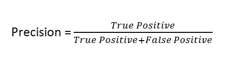

Health Insurance Cross Sell
Business Problem:
A health insurance specialized company is planning to expand its product line to include car insurance. To identify customers who are more likely to purchase this new insurance, the company intends to apply advanced data analysis techniques. The chosen method involves the use of binary classification algorithms, a machine learning technique, which will categorize customers into two groups: those prone to buying car insurance (identified as 1) and those who are not prone (identified as 0).
This classification will be made based on the existing customer data, considering variables that may influence the purchase decision. With the results of this analysis, a prioritized list of customers considered more likely to acquire car insurance will be generated. This list will then be used by the call center team, who will contact the selected customers to offer the new insurance. The goal of this strategy is to direct marketing and sales efforts more effectively, focusing on customers with the highest potential interest in the product. This not only increases the efficiency of sales campaigns but also contributes to the reduction of operational costs, ensuring that resources are employed in an optimized and targeted manner.
Data Source:
The dataset was taken from the website kaggle, known for having real datasets and common everyday data analysis problems.
Data Source: click here
Tool Used:
Programming language: Python
Method and problem resolution
To solve this problem, I used the cyclical method. The cyclical method is an iterative method consisting of several steps that are repeated and improved upon with each iteration to gradually enhance the problem's resolution. The cyclical method prioritizes rapid delivery, and after each cycle, it allows for the improvement of results and metrics of the ML model, for example. The steps to solve the problem were as follows:
- 1.0 - Data Description1.0 - Data Description
- 2.0 - Variable Filtering
- 3.0 - Variable Filtering
- 4.0 - Exploratory Data Analysis
- 5.0 - Data Preparation
- 6.0 - Feature Selection
- 7.0 - Machine Learning Modeling
- 8.0 - Hyperparameters Fine Tuning
- 9.0 - Error Translation and Interpretation
- 10 - Deployment
I will go into details about each of the above steps further below.
Step 1: Data Description
- id - Unique ID for the customer
- Gender - Gender of the customer
- Age - Age of the customer
- Driving_License 0 : Customer does not have DL, 1 : Customer already has DL
- Region_Code - Unique code for the region of the customer
- Previously_Insured 1 : Customer already has Vehicle Insurance, 0 : Customer doesn't have Vehicle Insurance
- Vehicle_Age Age of the Vehicle
- Vehicle_Damage 1 : Customer got his/her vehicle damaged in the past. 0 : Customer didn't get his/her vehicle damaged in the past.
- Annual_Premium - The amount customer needs to pay as premium in the year
- Policy_Sales_Channel - Anonymised Code for the channel of outreaching to the customer ie. Different Agents, Over Mail, Over Phone, In Person, etc.
- Vintage - Number of Days, Customer has been associated with the company
Step 2: Feature Engineering
In the Feature Engineering stage I have transformed two columns.
Step 3: Variable Filtering
This step is where I generally filter the variables. However, in this first cycle I will not filter any.
Step 4: Exploratory Data Analysis
At this stage, the goal is to identify the features that significantly contribute to the model's ability to differentiate between the target classes. I will look for characteristics that effectively create a division in the feature space — a hyperplane — that assists the classification model in distinguishing between the categories. To determine the relevance of a feature, I will examine whether there is a clear distinction between the classes when projected according to this specific feature.
If such separation is observed, I will consider the feature in question as important for the predictive power of the model. If there is no clear classification, this can confuse the classification instead of aiding it. Some important features that separate the response variable well are:
Age
Vehicle Age
Driving License
Step 5: Data Preparation
During the data preparation phase, due to their distribution and range, I opted to rescale some variables:
- annual_premium: Rescaled due to the wide range.
- age: Does not follow a Gaussian distribution.
- vintage: Rescaled to analyze the data on the same scale.
For further details, please refer to the notebook in step 5
Step 6: Feature Selection
In this step, an extratree classifier was trained and the columns were chosen according to the importance of the features.
Step 7: Machine Learning
As we are dealing with a binary classification problem, the predict_proba method was used to predict the probability of the prediction belonging to class 0 or 1. To evaluate the models, the cumulative gains curve was analyzed. The interpretation of the curve can be consulted in more detail in the following article from Towards Data Science.
Knn Cumulative Gains Curve
Interpretation:
- Baseline: Represents what one would expect if we chose samples randomly. In the image, if you select 20% of my base randomly, you would capture 20% of possible positive cases.
- Class 0: Shows the percentage of class 0 cases considering a specific percentage of samples. In the example above, if I consider 20% of the samples on the x-axis "Percentage of sample," I would capture just over 20% of negative class cases.
- Class 1: Shows the positive cases according to the samples considered in the base. In the image, we observe that the orange line rises linearly, if we take 40% of the base, we will have more than 80% of positive cases.
Linear Regression Cumulative Gains Curve
For comparison purposes, it can be observed that the Linear Regression model performs better, as it can capture 100% of the positive cases when considering approximately 50% of the dataset.
Considerations
- A perfect model would cause the line to rise rapidly to the top of the chart, meaning you would capture all positive cases with a small percentage of the sample.
- The higher a class's line is above the baseline, the better the model is at identifying that class.
- In the provided chart, class 1 is being captured by the model more efficiently than class 0, especially in the early segments of the sample. This means that by selecting a small percentage of the data based on the model's score, you will capture a large proportion of the positive cases of class 1.
Step 8:Fine Tuning
I skipped this step in this first cycle, as I am still studying the model parameters and their implications
Step 9: Results Intepretation
Precision and recall are metrics used to evaluate the quality of models in classification problems, including "learn to rank" problems.
Please refers to the article for more information.
Precision is the proportion of true positives in relation to the total examples that the model classified as positive. In other words, it is a measure of how many of the examples classified as positive are actually positive. It is calculated by the formula:

Recall is the proportion of true positives in relation to the total number of examples that are actually positive in reality. It measures the model's ability to find all relevant cases. The recall formula is:
In a learn to rank problem, where the goal is to rank items in an order of relevance, accumulated precision and accumulated recall can be used to evaluate the model at different levels of relevance. ranking cut. For example, you might want to know how accurate the model is on the top 10, 20, or 2000 top-ranked items.
Precision at k measures the ranking accuracy up to the kth item.
Therefore, it is the fraction of relevant items among the first k items.
Recall at k measures the ranking recall up to the kth item. This indicates how many relevant items are found in the first k items.
A function was created to know up to which kth we want to calculate the precision and recall of the ranked dataset.
Step 10: Deployment
At this stage, the class that performs all the steps and returns the predictions was created, ready to be put into production.